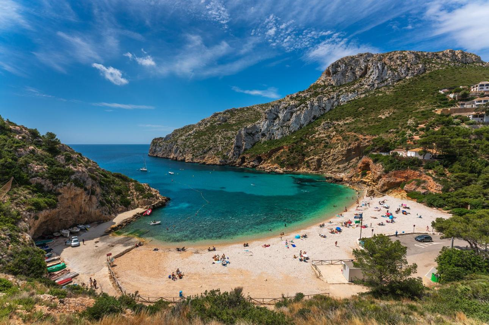

COSTA BLANCA · ALICANTE
Jávea
Un destino mediterráneo donde el mar, las calas y el casco histórico se combinan para disfrutar de una escapada tranquila.
📍 Cómo llegar a Jávea en Google Maps¿Qué ver en Jávea?
Jávea ofrece una combinación de playas, calas y rincones históricos que permiten disfrutar del Mediterráneo sin renunciar a descubrir su patrimonio.
El casco antiguo conserva calles estrechas, edificios tradicionales y lugares como la iglesia de San Bartolomé, uno de los edificios más representativos de la localidad.
Ruta por el centro histórico
Esta ruta a pie recorre el casco antiguo desde la Plaça de la Constitució, pasando por la Plaça del Convent, la iglesia de San Bartolomé, la Capella de Santa Anna y el Museo Soler Blasco, hasta llegar al Mercado Municipal.
🗺️ Abrir ruta a pie en Google Maps🍴 Dónde comer
Después de recorrer el casco antiguo, estas opciones quedan en el centro histórico o muy cerca. Consulta sus webs para ver la carta y confirmar horarios antes de ir.
Embruix
En la calle Mayor, dentro del centro histórico. Su carta combina tapas, carnes, pescados y platos de temporada.
📍 Carrer Major, centro histórico de Xàbia
Ver en Google MapsVolta i Volta
En una calle tranquila del casco antiguo; ofrece cocina mediterránea con productos de temporada.
📍 Carrer de Santa Teresa, 3, Xàbia
Ver en Google MapsConsejo para la escapada
Recorre el casco antiguo a pie y reserva tiempo para detenerte en sus plazas, tiendas y edificios históricos.